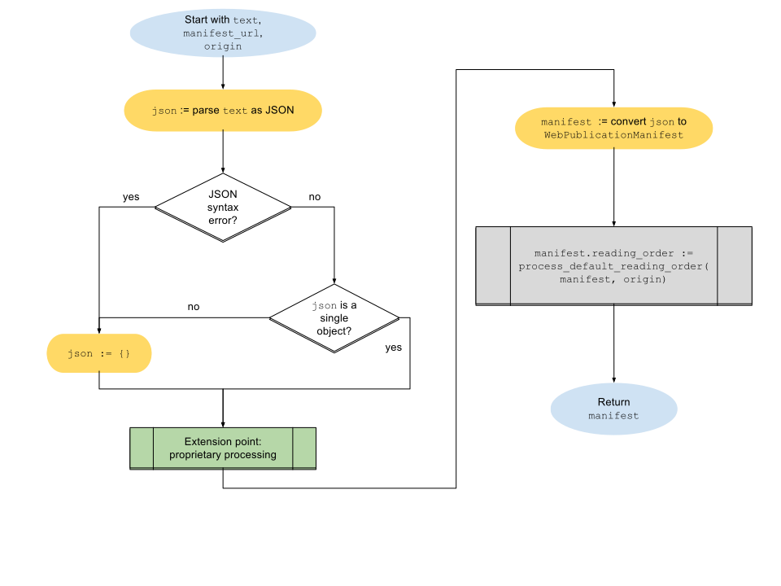

This specification defines a collection of information that describes the structure
of Web Publications so that user agents can provide user experiences tailored to
reading publications, such as sequential navigation and offline reading. This
information includes the default reading order, a list of resources, and
publication-wide metadata.
Status of This Document
This section describes the status of this document at the time of its publication. Other documents may supersede this document. A list of current W3C publications and the latest revision of this technical report can be found in the W3C technical reports index at https://www.w3.org/TR/.
This draft provides a preliminary outline of a Web Publication. Many details are
under active consideration within the Publishing Working Group and are subject to
change. The most prominent known issues have been identified in this document and
links provided to comment on them.
This document was published by the Publishing Working Group as a Working Draft.
This document is intended to become a W3C Recommendation.
Comments regarding this document are welcome. Please send them to
public-publ-wg@w3.org
(subscribe,
archives).
Publication as a Working Draft does not imply endorsement by the W3C
Membership. This is a draft document and may be updated, replaced or obsoleted by other
documents at any time. It is inappropriate to cite this document as other than work in
progress.
This document was produced by
a group
operating under the
W3C Patent Policy.
W3C maintains a public list of any patent
disclosures
made in connection with the deliverables of
the group; that page also includes
instructions for disclosing a patent. An individual who has actual knowledge of a patent
which the individual believes contains
Essential
Claim(s) must disclose the information in accordance with
section
6 of the W3C Patent Policy.
The Web is a lonely place. It is unbounded: resources live out their lives on
remote servers scattered across the globe, only reachable by addresses sometimes
known to only a few people. But life on the Web is not all doom and gloom.
Through the power of Web pages, these resources can be brought together to
create amazing experiences.
Web sites add another layer of relationship—this time between pages—but the
relationship is a tenuous one that typically depends on hyperlinks to add
cohesion. Without a user that understands how to follow the connections, a Web
site is still no more than a loose coupling of information.
The preceding is not a critique of the Web, but meant to highlight that the
modern Web is very much an active, event-driven experience. Users follow the
necessary paths to obtain the information they need.
The traditional publishing model, sometimes called the print model, differs from
the Web model in that the publisher packages all the information together and
thereby establishes the common pathway through it. The user can passively follow
the content page-by-page, or actively find other pathways via a table of
contents or index. It is a model that has worked to bind information in a
cohesive way for millennia, and continues to be an important model alongside the
Web. The publication as a bounded edition, made public, is used to carry
intellectual and artistic works of innumerable form: novels, plays, poetry,
journals, magazines, newspapers, articles, laws, treatises, pamphlets, atlases,
comics, manga, notebooks, memos, manuals, and albums of all sorts.
Attempts to reproduce this model on the Web have had to work around its loose
coupling of information: sometimes publications are compressed into a single
page; sometimes they are broken across multiple pages and hyperlinked together.
These models both have flaws, however: single-page publications are often so
large they render slowly, especially on low-power devices; multi-page
publications cannot be easily taken offline because their common thread cannot
be established.
As a result, users have had trouble accessing, compiling and downloading Web
content for curation and personal use. That, in turn, has fed the continuing
development of non-Web digital formats to redress these problems, and made it
necessary to create both Web-ready content and alternative renditions for
offline use.
This specification aims to reduce these barriers and reinvigorate publishing by
combining the best aspects of both models—the persistent availability and
portability of bounded publications with the pervasive accessibility,
addressability, and interconnectedness of the Open Web Platform. To do so, it
adds an unobtrusive definition of interrelation to the Web model: the Web
Publication.
1.2 What is a Web Publication
This section is non-normative.
A Web Publication is a discoverable and identifiable collection of
resources. Information about the Web Publication is expressed in a
machine-readable document called a manifest, which is what enables user
agents to understand the bounds of the Web Publication and the connection
between its resources.
The manifest includes metadata that describe the Web Publication, as a
publication has an identity and nature beyond its constituent resources. The
manifest also provides a list of all the resources that belong to the Web
Publication and a default reading order, which is how it connects resources into
a single contiguous work.
A Web Publication is discoverable in one of two ways: resources either include a
link to the manifest (via an HTTP Link header or an HTML link
element [html]), or the manifest can be loaded directly by a compatible
user agent.
With the establishment of Web Publications, user agents can build new experiences
tailored specifically for their unique reading needs.
Figure 1Simplified Diagram of the Structure of Web Publications. A description of the structure diagram is
available in the Appendix. Image available in SVG and PNG formats.
1.3 Scope
This section is non-normative.
This specification only defines requirements for the production and rendering of
valid Web Publications. As much as possible, it leverages existing Open
Web Platform technologies to achieve its goal—that being to allow for a measure
of boundedness on the Web without changing the way that the Web itself
operates.
Moreover, the specification is designed to adapt automatically to updates to Open
Web Platform technologies in order to ensure that Web Publications continue to
interoperate seamlessly as the Web evolves (e.g., by referencing the latest
published versions instead of specific dated versions).
Further, this specification does not attempt to constrain the nature of a Web
Publication: any type of work that can be represented on the Web constitutes a
potential Web Publication.
The specification is also intended to facilitate different user agent
architectures for the consumption of Web Publications. While a primary goal is
that traditional Web user agents (browsers) will be able to consume Web
Publications, this should not limit the capabilities of any other possible type
of user agent (e.g., applications, whether standalone or running within a user
agent, or even Web Publications that include their own user interface). As a
result, the specification does not attempt to architect required solutions for
situations whose expected outcome will vary depending on the nature of the user
agent and the expectations of the user (e.g., how to prompt to initiate a Web
Publication, or at what point or how much of a Web Publication to cache for
offline use).
1.4 Relationship to Other Specifications
1.4.1 Web App Manifest
Editor's note
The working group is investigating integration with the work done on the
Web App Manifest [appmanifest] specification to avoid duplication
of concerns both in the expression and serialization of a
manifest and in the processing and compilation of the infoset. It is expected,
however, that there will be differences in the processing models of each
(e.g., the initiation of the reading experience for Web
Publications versus installation for applications).
The working assumption is that both applications and publications can use
the same manifest and serialization to express the information necessary
to initiate themselves.
The initial stage of evaluating this assumption involves:
the continuing analysis of necessary metadata and publication
structure requirements;
the comparison and harmonization of web publication requirements
with those already defined in Web App Manifest.
The next stage will involve the serialization of the infoset in JSON to see how this
expression of the manifest can be aligned with the expression of the web
app manifest. Wherever semantically possible, the terms used and defined
for web app manifests will be reused, and, conversely, some of the
members defined for Web Publications may be generally useful for
applications and may be added to the Web App Manifest specification as a
common pool of information. To avoid possible future conflicts, care
will be taken to use a naming scheme that clearly separates terms to be
used for Web Publications only.
This specification consequently should be read and understood in this
context of an ongoing investigation, and that significant changes may
occur in the future.
This section will be updated as appropriate to reflect the current status
of this work, and describe the evolving relationship.
An identifier is metadata that can be used to refer to Web
Content in a persistent and unambiguous manner. URLs, URNs, DOIs, ISBNs, and PURLs are all
examples of persistent identifiers frequently used in publishing.
For the purposes of this specification, non-empty is used to refer to an
element, attribute or property whose text content or value consists of
one or more characters after whitespace normalization, where whitespace
normalization rules are defined per the host format.
URL
The general term URL is
defined by the URL Standard [url]. It is used as in other W3C specifications, like
HTML [html].
In particular, a URL
allows for the usage of characters from Unicode
following [rfc3987]. See the
note in the HTML5 specification for further details.
Web Publication
A Web Publication is a collection of one or more resources, organized
together through a manifest into a single logical work with a
default reading order. The Web Publication is uniquely
identifiable and presentable using Open Web Platform technologies.
2. Conformance
As well as sections marked as non-normative, all authoring guidelines, diagrams, examples,
and notes in this specification are non-normative. Everything else in this specification is
normative.
The key words MAY, MUST, MUST NOT, RECOMMENDED, REQUIRED, SHOULD, and SHOULD NOT are
to be interpreted as described in [RFC2119].
2.1 Conformance Classes
This specification defines two conformance classes: one for Web
Publications and one for user agents that process them.
A Web Publication conforms to this specification if it meets
the following criteria:
A user agent conforms to this specification if it meets the
following criteria:
it is capable of generating a conforming infoset for a Web
Publication.
3. Information Set
Editor's note
As the serialization of the manifest remains an open issue, specifics
about how properties are compiled into the infoset remain under-specified. This includes, but is not limited to,
what specific names the properties will have in the infoset, whether the names in the manifest will be the same as
those in the infoset and/or whether mappings to
properties from known vocabularies will be used.
The name "infoset" might change depending on feedback. Although this term has a
different meaning for individuals familiar with XML, alternatives such as "properties"
and "metadata" do not fully capture the nature or purpose of the collected
information.
3.1 Explanation
This section is non-normative.
A Web Publication is defined by a set of properties known as its information set (infoset). The infoset is
logically divided into two sets of properties: those that describe the
publication and those that express key structures. These classifications only
exist for the purposes of understanding the function of the properties,
however.
The infoset is both abstract and concrete.
It is abstract in the sense that it represents a set of information that a user
agent has to compile about the Web Publication, but it also becomes concrete
when the user agent creates an internal representation of that information.
The infoset is primarily compiled from a Web
Publication's manifest, whose serialization requirements are defined in
4.4Serialization. Some information can be obtained
outside the manifest—fallback rules for properties defined in the following
subsections allow a user agent to compile information that the author has not
provided in the manifest, for example.
3.2 Requirements
The requirements for the expression of infoset properties are as follows:
These requirements reflect the current minimum consensus, though a
number of issues remain open that could change whether an item is required or
recommended. Refer to the property descriptions for more information.
3.3 Descriptive Properties
3.3.1 Accessibility
Accessibility metadata allows the discovery of features and affordances of
the Web Publication that enable its use by users with different
reading requirements and needs.
Editor's note
How to express accessibility metadata remains to be
determined. This could be a grouping of properties from
schema.org, for example, or could be split out into a list of
individual properties.
3.3.2 Address
A Web Publication's
address is a URL [url] that represents the primary entry point for the
Web Publication. If this URL does not resolve to an HTML document [html],
user agents SHOULD NOT provide access to it to users.
The referenced document SHOULD be a resource of the Web Publication. It can
be any resource, including one that is not listed in the default reading
order. This document MUST include a link to
the manifest to ensure a bidirectional linking relationship (i.e.,
that user agents can also locate the manifest from the document at the
address.
If the document is not a Web Publication resource, user agents SHOULD load
the first document in the default reading order when initiating the
Web Publication.
Note
To improve the usability of Web Publications, particularly in
user agents that do not support Web Publications, include navigation aids in
the referenced document that facilitate consumption of the content, (e.g.,
provide a table of contents or a link to one).
The availability of the address does not preclude the creation and use of
other identifiers and/or addresses to retrieve a representation of a Web
Publication, whether in whole or in part.
Note
The Web Publication's address can also be used as value for an
identifier link relation [link-relation].
3.3.3 Canonical Identifier
A Web Publication's
canonical identifier is a unique identifier that resolves to the
preferred version of the Web Publication. The canonical identifier MUST be
an address or a value that allows a one-to-one mapping to an address
(e.g., a DOI [doi] can
be resolved to a URL [url] via a DOI resolver). If a user agent cannot resolve the canonical
identifier to an address, it SHOULD ignore the property.
If a Web Publication is hosted at more than one address, the canonical
identifier allows a user agent to identify the shared relationship between
the versions and to determine which of the available addresses is
primary.
The canonical identifier is also intended to provide a measure of permanence
above and beyond the Web Publication's address. Even if a Web
Publication is permanently relocated to a new address, for example, the
canonical identifier will provide a way of locating the new location (e.g.,
a DOI registry could be
updated with the new URL, or a
redirect could be added to the URL of the canonical identifier).
When assigned, the canonical identifier needs to be unique to one and only
one Web Publication, independent of its address(es). Ensuring uniqueness is
outside the scope of this specification, however. The actual uniqueness
achievable depends on such factors as the conventions of the identifier
scheme used and the degree of control over assignment of identifiers.
Note
If the canonical identifier is a URL, it can be used as the
target of a "canonical" link [rfc6596] (e.g., a link
element [html] whose rel attribute has the value
canonical or an HTTP
Link header field [rfc5988] similarly identified).
Is a canonical identifier necessary to call
out explicitly in the infoset, or can
it be handled by other metadata.
3.3.4 Cover
The infoset SHOULD include a reference
to a cover image. This image can be used by user agents to present the
Web Publication to users (e.g., in a library or bookshelf, or
when initially loading the Web Publication).
User agents SHOULD NOT use the cover image as the sole means of selecting or
accessing Web Publications. A user agent SHOULD use the Web Publication's title and creators as
text alternatives for such interfaces.
More than one cover image MAY be referenced from the infoset to provide
alternative sizes and resolutions for different device screens.
A user agent MAY create a cover for a Web Publication if one is not present.
This specification does not define requirements for the creation of such
cover images (e.g., the user agent could use a placeholder image, generate
an image dynamically, or incorporate properties of the infoset into a
graphic, such as the title or creators).
3.3.5 Creators
Creators are the individuals or entities responsible for the creation of the
Web Publication.
The creator property SHOULD include the role the creator played in the
creation of the Web Publication (e.g., 'author', 'illustrator',
'translator').
the natural language, which MUST be a tag that conforms
to [bcp47];
the base direction, which identifies the display direction
for the property using one of the following possible values:
ltr: left-to-right;
rtl: right-to-left;
auto: direction is determined from the value of the
property.
The Web Publication's infoset MAY
contain global language and the base direction declarations using the same
conventions (i.e., [bcp47] tags for language, and the values
ltr/rtl/auto for base direction).
These are used as defaults for textual properties in the infoset, unless overwritten by the
properties themselves.
Note
These features make it possible to add the title of a
publication in different languages, or repeat the creators’ names using
different scripts.
User agents MUST NOT use the language and base direction outside the context
of the manifest (e.g., in the processing or rendering of the Web Publication
content). These values are not a replacement for such
declarations in each resource as defined by its format.
If a user agent requires the language and one is not available in the infoset (globally or specifically for the
property), or the obtained value is invalid, the user agent MAY attempt to
determine the language. This specification does not mandate how such a
language tag is created. The user agent might:
use the non-empty language declaration of the manifest;
use the first non-empty language declaration found in a resource in the
default reading order;
calculate the language using its own algorithm.
If a language tag cannot be determined, user agents MUST use the value
"und" (undetermined). If the base direction cannot be
determined, user agents MUST assume the value auto.
Issue 53: Language of web publication v. language of manifest/resources
Is the language declared for the manifest content the same as the
language of the publication? If it is, how to deal with multilingual
publications?
3.3.7 Last Modification Date
The last modification date is the date when the Web
Publication was last updated (i.e., whenever changes were last made
to any of the resources of the Web Publication, including the
manifest).
This date does not necessarily reflect all changes to the Web Publication
(e.g., third-party content could change without the author being aware).
User agents SHOULD check the last modification date of individual resources
to determine if they have changed and need updating.
3.3.8 Publication Date
The publication date is the date on which the Web
Publication was originally published. It represents a static event
in the lifecycle of a Web Publication and allows subsequent revisions to be
identified and compared.
The exact moment of publication is intentionally left open to interpretation:
it could be when the Web Publication is first made available online or could
be a point in time before publication when the Web Publication is considered
final.
3.3.9 Privacy Policy
Users often have the legal right to know and control what information is
collected about them, how such information is stored and for how long,
whether it is personally identifiable, and how it can be expunged. Including
a statement that addresses all such privacy concerns is consequently an
important part of publishing Web Publications. Even if no information
is collected, such a declaration increases the trust users have in the
content.
To address this concern, a link to a privacy policy can be included in the
infoset. The privacy policy does
not have to be a resource of the Web Publication, although including it as a
resource is RECOMMENDED.
It is RECOMMENDED that the privacy policy be provided in a human-readable
format, such as HTML [html].
Refer to 10.Privacy for more information about privacy
considerations in Web Publications.
3.3.10 Reading Progression Direction
The reading progression establishes the reading direction from one
resource to the next within a Web Publication. The value of this
property may be:
ltr: left-to-right;
rtl: right-to-left;
auto: the user agent chooses the direction.
The default value is auto.
This information item has no effect on the rendering of the
individual primary resources; it is only relevant for the progression
direction from one resource to the other.
Note
The reading progression of a Web Publication is used to
adapt such publication level interactions as menu position, swap direction,
defining tap zones to lead the user to the next and previous pages, touch
gestures, etc.
3.3.11 Title
The title provides the human-readable name of the Web Publication.
If a user agent requires a title and one is not available in the infoset, the user agent MAY create one.
This specification does not mandate how such a title is created. The user
agent might:
provide a language-specific placeholder title (e.g., 'Untitled
Publication');
use the URL of the
manifest;
calculate a title using its own algorithm.
Note
A user agent is not expected to produce a meaningful title [wcag20] for a Web Publication when one
is not specified.
3.4 Structural Properties
3.4.1 Default Reading Order
The default reading order is a specific progression through a set
of Web Publication resources.
A user might follow alternative pathways through the content, but in the
absence of such interaction the default reading order defines the expected
progression from one resource to the next.
The default reading order MUST include at least one resource.
The default reading order is either specified directly in the manifest or in
a nav element [html]. In the latter case, the manifest
MUST provide a link to the Web Publication resource that contains the
nav element, with a fragment identifier that specifically
identifies it.
The process for extracting a default reading order from a nav
element are as follows:
extract a list of resource paths referenced from the href
attribute of all a elements;
strip any fragment identifiers from the references;
resolve all relative paths to full URLs;
remove all consecutive references to the same resource, leaving only the
first.
If a user agent requires a default reading order and one is not provided in
the infoset, it MAY attempt to
construct one. This specification does not mandate how such a default
reading order is created. The user agent might:
use only the resource the user accessed to reach the manifest;
calculate the default reading order using its own algorithm.
3.4.2 Resource List
The resource list enumerates all resources that are used in the processing and rendering of a Web
Publication (i.e., that are within its bounds). This list is the
definitive source that user agents have in determining which referenced
resources belong to the Web Publication and which are external to it.
The completeness of the resource list will affect the usability of the Web
Publication in certain reading scenarios (e.g., the ability to read the Web
Publication offline). For this reason, it is strongly RECOMMENDED to provide
a comprehensive list of all of the Web Publication's constituent resources.
At a minimum, the resource list MUST include a list of all resources in the
default reading order.
In some cases, a comprehensive list of these resources might not be easily
achieved (e.g., third-party scripts that reference resources from deep
within their source), but a user agent SHOULD still be able to render a Web
Publication even if some of these resources are not identified as belonging
to the Web Publication (e.g., when it is taken offline without them).
If a user agent encounters a resource that it cannot locate in the resource
list, it MUST treat the resource as external to the Web Publication (e.g.,
it might alert the user before loading, open the resource in a new window,
or unload the current Web Publication and resume normal Web browsing).
Must the manifest list resources in the
default reading order or can these can be inferred?
3.4.3 Table of Contents
The table of contents is a hierarchical list of links that
reflects the structural outline of the major sections of the Web
Publication. There are no requirements on the completeness of the table of
contents, except that, when specified, it MUST include a link to at least
one resource.
The table of contents is either specified directly in the manifest or in a
nav element [html]. In the latter case, the
manifest MUST provide a link to the Web Publication resource that contains
the nav element, with a fragment identifier that specifically
identifies it.
If a user agent requires a table of contents and one is not specified, it MAY
construct one. This specification does not mandate how such a table of
contents is created. The user agent might:
attempt to locate a table of contents in the default reading
order (e.g., an HTML document with a nav element that has the
role attribute value doc-toc);
use the titles of the resources in the default reading order;
calculate a table of contents using its own algorithms.
Issue
This question arises only if the table of contents is accepted:
can a table of contents navigation element refer, via links, to any resource
that is not listed in the default reading order?
Issue
The issue of using the HTML
nav element as a possible encoding of the table of contents
was mentioned or explicitly addressed in the following (now closed)
issues:
The infoset is designed to provide a
basic set of properties for use by user agents in presenting and rendering a
Web Publication, but MAY be extended in the following ways:
through the inclusion of additional properties in the manifest;
by the provision of linked metadata records.
User Agents MAY support additional properties but MUST NOT include unrecognized
properties in the infoset. The use of
linked records is RECOMMENDED whenever possible, as the use of native formats
standardizes and simplifies processing by user agents.
A description of how a manifest declares it describes a
Web Publication will be included in a future draft, as such a
mechanism will depend on integration with Web App
Manifest [appmanifest].
4.4 Serialization
The manifest is serialized as a JSON document [ecma-404].
Editor's note
Additional serialization details will be included in a future
draft, as these will depend on integration with Web App
Manifest [appmanifest].
Issue 32: Relationships to the Web App Manifest specification.
There are no restrictions on a Web Publication beyond this requirement. The Web
Publication MAY include references to resources of any media type, both in the
default reading order and as dependencies of other resources.
Note
When adding resources to a Web Publication, consider support in user agents.
The use of progressive enhancement techniques and the provision of fallback
content, as appropriate, will ensure a more consistent reading experience
for users regardless of their preferred user agent.
5.2 Linking to a Manifest
Resources SHOULD provide a link to the manifest of the Web Publication to which
they belong to enable discovery. Links MUST take one or both of the following
forms:
An HTTP Link header field [rfc5988] with its
rel parameter set to the value
"publication".
The following details might be moved to the lifecycle section in a
future draft.
When a resource links to multiple manifests, a user agent MAY choose to present
one or more alternatives to the end user, or choose a single alternative on its
own. The user agent MAY choose to present any manifest based upon information
that it possesses, even one that is not explicitly listed as a parent (e.g.,
based upon information it calculates or acquires out of band). In the absence of
a preference by user agent implementers, selection of the first manifest listed
is suggested as a default.
6. Web Publication Lifecycle
Editor's note
The publishing working group is currently evaluating the best approach for
implementing Web Publications in user agents. This note is intended to
provide an overview of where current thinking is at and what issues are under
consideration.
The development of Web Publications is not viewed as a separate forking of the
Web, but an enhancement layer that can be supported by user agents. To that end,
the primary constraints on any solution for Web Publications are that:
the rendering of Web Publications must not interfere with the underlying Web
model and APIs
— all functionality and enhancements must be layered on top;
a Web Publication should not have to carry its own implementation code
— functionality is ideally provided by the user agent and/or
polyfill.
While this specification will provide implementation flexibility for user agents,
there are still a number of areas that have been identified as potentially
needing to be detailed. These include:
initialization expectations for a Web Publication:
automatic initiation v. user prompts;
linked v. directly loaded manifests;
resources that belong to more than one Web Publication.
the creation of a "publication state":
persistence of publication information across page loads;
location and persistence of UI;
indications of supported features;
DOM issues such as persistence of numbering schemes.
The working group intends to flesh out the lifecycle in later revisions once it
is clearer what models are viable and what solutions can be standardized. Input
on the feasibility and challenges of these approaches is welcome at any
time.
6.1 Obtaining a manifest
Editor's note
Discovery of a manifest is currently dependent on
the presence of an HTTP Link header or an HTML
link element with the rel attribute value
publication. This approach might change in the future
depending on whether Web Publications align with Web App
Manifest [appmanifest] or another manifest format.
The steps for obtaining a manifest are given by the following algorithm.
The algorithm, if successful, returns a processed manifest and the
manifest URL; otherwise, it terminates prematurely and returns
nothing. In the case of nothing being returned, the user agent MUST ignore the
manifest declaration.
From the Document of the top-level browsing context, let
origin be the Document's origin, and
manifest link be the first link element in tree
order whose rel attribute contains the token
publication.
If origin is an [html] opaque origin, terminate this
algorithm.
If manifest link is null, terminate this algorithm.
If manifest link's href attribute's value is the
empty string, then abort these steps.
Let manifest URL be the result of parsing the value of the
href attribute, relative to the element's base URL. If
parsing fails, then abort these steps.
Let request be a new [fetch] request, whose URL is
manifest URL, and whose context is
"publication".
If the manifest link's crossOrigin attribute's value
is 'use-credentials', then set request's credentials
to 'include'.
Await the result of performing a fetch with request, letting
response be the result.
If response is a network error, terminate this algorithm.
Let text be the result of UTF-8 decoding response's body.
Let manifest be the result of running processing a
manifest given text, manifest URL, and the URL
that represents the address of the top-level browsing context.
The publication value for context doesn't exist
yet. The working group will need to define and register this context
value.
6.2 Processing the manifest
Editor's note
The manifest could be processed differently depending on future
alignment with Web App Manifest [appmanifest] or another format
(e.g., as an extension point for another algorithm.
The steps for
processing a manifest are given by the following algorithm. The
algorithm takes a text string as an argument, which represents a
manifest, and a manifest URL [url], which
represents the location of the manifest, and a document
URL [url]. The output from inputting a JSON document into this
algorithm is a processed manifest.
Let json be the result of parsingtext. If parsing
throws an error:
Issue a developer warning with any details pertaining to the JSON
parsing error.
Set json to be the result of parsing the string
"{}".
If Type(json) is not Object:
Issue a developer warning that the manifest needs to be an object.
Set json to be the result of parsing the string
"{}".
Extension point: process any proprietary and/or other supported members at
this point in the algorithm.
Set manifest["reading_order"] to the result of processing the
default reading order given manifest["reading_order"],
manifest["resources"], manifest URL, and
document URL.
The steps for processing the
default reading order are given by the following algorithm.
If manifest["reading_order"] is not empty, return it and
terminate this algorithm.
If manifest["resources"] is not empty, let navigation
document link be the first PublicationLink whose
rel member contains the token contents.
If navigation document link is not null and its
href member is not empty, let navigation
document URL be the result of parsing the value of the
href attribute, relative to the manifest URL.
If navigation document URL is empty, set navigation document
URL to document URL.
Let request be a new [fetch] request, whose URL is
navigation document URL, and whose context is
"publication".
Await the result of performing a fetch with request, letting
response be the result.
If response is a network error, terminate this algorithm.
Let document be the result of UTF-8 decoding
response's body.
If document is not an HTML document [html], terminate this algorithm.
Let default reading order be the result of processing
document:
If document contains a nav element:
Extract a list of resource paths referenced from the
href attribute of all a
elements.
Strip any fragment identifiers from the references.
Resolve all relative paths to full URLs.
Remove all consecutive references to the same resource,
leaving only the first.
This section contains placeholders for possible reading
enhancements/affordances the user agent may/should/must provide. The list is subject
to addition, modification and removal as the enhancements get discussed in more
detail.
Issue 143: What should be in the spec for affordances?
it MUST inform the user that the current resource is part of a Web
Publication
it SHOULD display the title of the Web Publication
it MAY display additional metadata from the infoset
Publication mode is a display mode implemented by the user agent that
follows the conventions listed in presentation
and navigation.
7.2 Add to the list of publications
User agents SHOULD provide a list of publications where the user can
browse, search, add and remove their publications.
When a user agent obtains a manifest for a Web Publication that is not
currently included in the list of publications, it MAY provide an
affordance to add it to the list.
This affordance has the following requirements:
it SHOULD display the title of the Web Publication
it MAY display additional metadata from the infoset
7.3 Presentation
7.3.1 Layout
The layout and rendering of Web Publications is governed by the same
rules that apply to all Web content: HTML documents are styled and laid out according to the rules of
CSS, SVG documents are
rendered as defined by that format, etc. This specification requires no
particular profile or subset of CSS, HTML, or
SVG to be supported, other
than the expectations set for these technologies by their respective
specifications.
Editor's note
This specification intentionally avoids introducing any new layout
features. Any shortcoming of the Web platform in terms of layout needs
to be addressed for the whole Web platform, which means via CSS.
This working group will work with other relevant groups of the W3C to address
platform-wide limitations that negatively impact Web
Publications.
For the purposes of layout, each resource of a Web Publication is treated as
a separate document. User agents MUST NOT mix content from multiple
resources in the same rendering (e.g., CSS floats or
absolutely positioned elements from one resource cannot intrude or
overlap with content from an other resource).
Note
Despite this general requirement that each resource should be treated as
a separate document for the purpose of layout, there are some places
where CSS specifications
should be amended to be able to deal more intelligently with collections
of resources like Web Publications.
One instance is the definition of cross-references, which are currently restricted to work only
within a single document. This restriction should be relaxed to allow
for cross-references between separate resources of a single Web
Publication.
Another related would be to allow counters to accumulate across multiple resources of a single
Web Publication (e.g., so that figures in multiple sections may be
numbered in a single sequence).
7.3.2 User Settings
When a user agent renders a Web Publication, it SHOULD provide user
settings to customize the experience.
User settings MAY include:
text size;
font family;
display mode (night, high contrast, etc.);
playback speed (for audio and video resources).
This specification does not cover how user agents override author styles to
offer user settings.
Editor's note
To provide user settings in their reader mode, browsers usually get rid
of most of the author styles. There is always a tension in reading
environments between author styles and the user's preference, which is
very hard to balance.
Issue 136: WP affords treatment of the publication as a logical whole
7.3.3 Scrolling or Paginating
This section is non-normative.
Publications have historically been presented via paged media, whereas Web
pages almost always scroll. As the preferences of individual readers vary,
and as different types of publications are better suited for one or the
other, this specification encourages user agents to support both, and to
offer a choice to their users.
Editor's note
It might be useful for authors to be able to specify a preference between
scrolling and pagination, even if a strict requirement is not possible.
This should most likely be addressed through an extension of @viewport or of the
viewport meta tag(see [css-device-adapt]), or possibly
through an extension of @page (see [css-page-3]). This should
be discussed with the relevant working groups (CSSWG, WebPlatformWG, WHATWG).
Issue 137: WP affords "paging" through a publication
7.3.4 Paginated Layout
When a user agent renders a Web Publication in a paginated layout, it
MUST lay out each document in the default reading order sequentially,
with the last page of a resource being followed by the first page of the
subsequent one.
Editor's note
To avoid blank pages, if a resource ends on a left page (resp. right
page), the subsequent one should start on a right page (resp. left page)
even if the page progression (see [css-page-3]) would otherwise lead
to it starting on the opposite page. It should also be possible to use
the break-before property (see [css-break-3]) to force the
content to resume on the opposite side if that was desired by the
author.
[css-page-3] needs to be amended to describe this exception to the
general behavior when dealing with collections of documents instead of
individual documents.
Editor's note
How is pagination supposed to work when subsequent resources have
opposite page
progression directions (see [css-page-3]). For example,
due to different a different writing mode? This is not necessarily a
problem from a layout point of view, as each page is independent, but
from an UI point of view. If swiping left means next page until the end
of one chapter, and starts meaning previous page in the next chapter
because the language is switched from English to Hebrew, this is going
to be confusing.
Editor's note
[css-page-3] needs to be amended so that page
counters are not automatically reset to at the beginning of each
new resource belonging to the same Web Publication.
Issue 137: WP affords "paging" through a publication
7.4 Navigation
Issue 86: Accessibility requirements for navigation
7.4.1 Reading Order
Hyperlinks are the means by which multiple resources are linked together on
the Web. When users reach the end of one resource, they have to activate a
hyperlink to move to the next resource in the sequence. While this model of
navigation is effective, it is also disruptive for immersive reading —
it forces users to disengage from the content and perform the actions
necessary to activate the links. It is also limited to media types that
support hyperlinks.
The default reading order provides an enhancement to the hyperlink
model, allowing the user agent to automatically move the user to the next
resource when a more natural action occurs, like a swipe across the screen.
It is similar conceptually and functionally to the link
element's next and prev
relationships [html].
Issue 38: What does "Reading Order" mean in the context of a Web Publication?
Issue 136: WP affords treatment of the publication as a logical whole
7.4.2 Progression
While reading a Web Publication, the user follows a natural
progression within a resource as well as between resources (following the
default reading order).
User agents SHOULD provide an affordance that saves this progression in the
publication and returns the user to their last location the next time they
open the publication.
When the user agent obtains a manifest for the first time, it MAY also
prompt the user whether they would like to:
continue reading the publication from their current location; or
Issue 145: WP affords saving and retrieve progression
Issue 136: WP affords treatment of the publication as a logical whole
7.4.3 Table of Contents
The table of contents is one of the key aids to navigating a publication, as
it enables users to quickly move to the start of major sections. It is also
a useful aid in understanding the overall structure and purpose of a
publication (e.g., what topics are covered, where the user currently is in
relation to the overall structure). Users often want quick access the table
contents for these reasons.
User agents SHOULD provide an affordance for accessing the table of contents
without requiring the user to leave the resource they are currently
viewing.
Issue 145: WP affords saving and retrieve progression
Detail on inter-publication search across multiple resources will
be included in a future draft.
Issue 136: WP affords treatment of the publication as a logical whole
8. Web Publication Locators
This section is non-normative.
Editor's note
The document referred from this section, i.e., Web Annotation
Extensions for Web Publications [wpub-ann], has been recently renamed. Its
previous was "Locators for Web Publication". The terminology used in this section
has to be realigned with the name change.
Locators are used to identify, locate, retrieve, and/or reference locations and
content fragments within Web Publications (e.g., for address(es), bookmarks,
and annotations). Locators traditionally take the form of fragment
identifiers [rfc3986], where the portion of a URL preceded by a number sign character
(#) identifies a specific position within the referenced
resource.
For some use cases, it is essential to identify and reference a Web
Publication resource—or a location in or a segment of a resource—in the
scope or context of the Web Publication to which it belongs. A traditional fragment
identifier cannot satisfy this requirement, since only the URL of the constituent resource
containing the location or content fragment of interest is expressed. The Web
Annotation Extensions for Web Publications [wpub-ann] document, based on the
Web Annotation Model [annotation-model], addresses this issue by providing
the means to express both the URL of
the resource and the URL of the Web
Publication.
Web Publication Locators also address the problem of referencing into a resource that
was not authored with such a need in mind. A fragment identifier can only reference
elements with explicit identifiers and locations with explicit anchor points. Web
Publication Locators include a variety of selectors that work with the general
structures and content of a resource (e.g., text selectors, CSS selectors).
Editor's note
As Web Publication Locators currently rely on a JSON-based expression syntax, it is
not yet clear how much of this syntax can be translated to a fragment identifier.
This may limit the usefulness beyond expressions that are also JSON-based (e.g., outside of
annotations or bookmarks).
Editor's note
Illustrate with example of an easy to understand Web Publication Locator, such as
might be used in annotating a simple Web Publication.
The semantics of Web Publication Locators are a mapping and extension of the Web
Annotation Data Model [annotation-model] and
Vocabulary [annotation-vocab] for describing and referencing a segment of a
Web resource. As a result, Web Publication Locators provide the expressiveness
needed for a broad range of annotation and bookmarking use cases. Additionally, Web
Publication Locators provide a way to identify and reference a location within a Web
Publication (i.e., as distinct from identifying and referencing a content fragment
consisting of a span of characters or bytes). A Web Publication Locator can be used
to identify, retrieve and/or reference a fragment of a Web Publication that spans
multiple resources.
Note
In composing a Web Publication Locator, use the canonical identifier of
the Web Publication in preference to any alternative addresses. Such use
facilitates the collation of Web Publication Locators associated with a
particular Web Publication. URLs
of Web Publication resources appearing in a Web Publication Locator should match
the URL of the resource provided
in the infoset.
The dir member's value are defined by TextDirection as:
ltr
Left-to-right text.
rtl
Right-to-left text.
auto
Determined by the Unicode Bidirectional Algorithm [uax9]
algorithm.
A.3 author member
Editor's note
The current infoset for creators is not
fully defined; this dictionary might be further improved once there is agreement
on how they should be handled.
The author member is a sequence of Contributor
dictionaries where each dictionary has the following members:
name
Contains one or more localizable string for the contributor's name.
identifier
Contains a canonical identifier for the contributor.
A.4 LocalizableString dictionary
Editor's note
This definition includes a slightly tweaked version of the i18n
recommendation that also includes a string value in addition to a language and a
direction.
This definition is based on a simplifed model of RWPM, where
the link does not contain properties. In the context of EPUB 4, the working
group might also need to re-introduce these properties.
The PublicationLink dictionary contains the following members:
Figure 2Obtain a manifest. See the normative description of the algorithm
in 6.1Obtaining a manifest. Image available in SVG and PNG formats.

Figure 3 Process a manifest. See the normative description of the
algorithm in 6.2Processing the manifest. Image available in SVG and PNG formats.
Figure 4 Process default reading order. See the normative description of
the algorithm in 6.3Processing the default reading order. Image available in SVG and PNG formats.
Figure 5 Extract reading order (from the nav element, as part of
the process for obtaining the reading order). See the normative
description of the algorithm in 6.3Processing the default reading order. Image
available in SVG and PNG formats.
A simplified diagram of the structure of a Web Publication. The Web
Publication is broken down into two elements. The first element is the actual
contents (all the real things listed in the manifest). This element is broken
down into the CSS, the actual “things” such as the HTML documents, audio, etc, and the
images, fonts etc. The actual “things” have an additional subset of items that
includes the entry point to the publication and all of the other documents. The
second element is the Manifest (JSON). The manifest is used to generate the Information Set (“Infoset”), which consists of a list of
all the “things” in the publication, the publication metadata, and the default
reading order of content. It is noted in the diagram that the entry point has to
link to the manifest. (Return to the
diagram of Web Publication.)
D. Acknowledgements
This section is non-normative.
The following people contributed to the development of this specification:
Greg Albers (J. Paul Getty Trust)
Boris Anthony (The Rebus Foundation)
Christopher Auclair (VitalSource | Ingram Content Group)
Luc Audrain (Hachette Livre)
Mike Baker (Houghton Mifflin Harcourt (HMH))
Baldur Bjarnason (The Rebus Foundation)
Nick Brown (VitalSource | Ingram Content Group)
Jeff Buehler (Metrodigi, Inc.)
Fred Chasen (W3C Invited Experts)
Timothy Cole (University of Illinois at Urbana-Champaign)
Rachel Comerford (Macmillan Higher Education)
Garth Conboy (Google, Inc.)
Christopher Cosner (Stanford University)
Dave Cramer (Hachette Livre)
Romain Deltour (DAISY Consortium)
Marisa DeMeglio (DAISY Consortium)
Vagner Diniz (NIC.br - Brazilian Network Information Center)
Brady Duga (Google, Inc.)
Ben Dugas (Rakuten,Inc.)
Roger Espinosa (University of Michigan Library)
Reinaldo Ferraz (NIC.br - Brazilian Network Information Center)
Heather Flanagan (RFC Editor)
Jun Gamo (Voyager Japan, Inc.)
Hadrien Gardeur (Feedbooks)
Matt Garrish (DAISY Consortium)
Harriett Green (University of Illinois at Urbana-Champaign)
Markku Hakkinen (Educational Testing Service)
Katie Haritos-Shea (Knowbility, Inc)
Ivan Herman (W3C Staff)
Leslie Hulse (HarperCollins Publishers)
Rick Johnson (VitalSource | Ingram Content Group)
Takeshi Kanai (Sony Corporation)
Deborah Kaplan (W3C Invited Experts)
Bill Kasdorf (Book Industry Study Group)
George Kerscher (DAISY Consortium)
Yuri Khramov (Evident Point Software Corp.)
Toshiaki Koike (Voyager Japan, Inc.)
Peter Krautzberger (krautzource UG)
Matt Kuznicki (Datalogics, Inc.)
Charles LaPierre (Benetech)
Laurent Le Meur (EDRLab)
Vladimir Levantovsky (Monotype)
Mia Lipner (Pearson plc)
Edwina Lui (Kaplan Publishing)
Phil Madans (Hachette Livre)
Christopher Maden (University of Illinois at Urbana-Champaign)
Jia Ma (Kaplan Publishing)
Liisa McCloy-Kelley (Penguin Random House)
Bill McCoy (W3C Staff)
Jonathan McGlone (University of Michigan Library)
Hugh McGuire (The Rebus Foundation)
Nellie McKesson (W3C Invited Experts)
Maureen McMahon (Kaplan Publishing)
Selma Morais (NIC.br - Brazilian Network Information Center)
Jasmine Mulliken (Stanford University)
Shinyu Murakami (Vivliostyle Inc.)
Makoto Murata (Vivliostyle Inc.)
Cristina Mussinelli (Associazione Italiana Editori)
Christos Nikolakakos (Wiley)
Evan Owens (Cenveo Publisher Services)
Gregorio Pellegrino (Associazione Italiana Editori)
Fernando Pinto da Silva (EDRLab)
Chris Powell (University of Michigan Library)
Jeff Printy (Macmillan Higher Education)
Ryan Pugatch (Hachette Livre)
Joshua Pyle (Wiley)
Wendy Reid (Rakuten,Inc.)
Florian Rivoal (W3C Invited Experts)
Leonard Rosenthol (Adobe Systems Inc.)
Nicholas Ruffilo (VitalSource | Ingram Content Group)
Robert Sanderson (J. Paul Getty Trust)
Wolfgang Schindler (PONS GmbH)
Jodi Schneider (University of Illinois at Urbana-Champaign)
Ben Schroeter (Pearson plc)
Tzviya Siegman (Wiley)
Avneesh Singh (DAISY Consortium)
Susanna Skinner (HarperCollins Publishers)
Kathryn Stewart (Metrodigi, Inc.)
David Stroup (Pearson plc)
Lillian Sullam (Penguin Random House)
Mateus Teixeira (W. W. Norton)
Jonathan Thurston (Pearson plc)
Daniel Weck (EDRLab)
Daniel Weck (DAISY Consortium)
John Weise (University of Michigan Library)
Jason White (Educational Testing Service)
David Wood (Ephox Corporation)
Richard Wright (EDRLab)
Jeff Xu (Rakuten,Inc.)
Evan Yamanishi (W. W. Norton)
Maurice York (University of Michigan Library)
Benjamin Young (Wiley)
The Working Group would also like to thank the members of the
Digital Publishing Interest Group for all the hard work
they did paving the road for this specification.